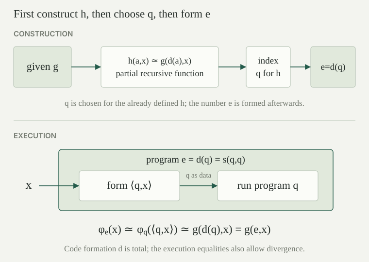

Use the numbered programs \(\varphi_e\), the square pairing \(\langle a,x\rangle\), and the primitive-recursive specialization function \(s(e,a)\) from the parameter theorem. Thus every natural number is a program index and
Here \(\simeq\) is equality of partial values: both sides are undefined, or both are defined with the same natural-number value. We write \(\varphi_e\simeq\varphi_j\) when this holds at every input. In particular, equal partial functions have the same domain as well as the same outputs there.
For a total numerical transformation \(f:\mathbb N\to\mathbb N\), a semantic fixed point is an index \(e\) such that \(\varphi_e\simeq\varphi_{f(e)}\). The word “semantic” specifies that the fixed object is computed behavior. A numerical fixed point would instead satisfy \(e=f(e)\). Numerical equality implies equality of behavior, but the recursion theorem will assert the latter without asserting the former.
The self-specialization function \(d:\mathbb N\to\mathbb N\), defined by \(d(a)=s(a,a)\), is primitive recursive and satisfies
The function \(s\) is primitive recursive jointly in its two arguments. Supplying the same input to both is an instance of composition, so \(d\) is primitive recursive. Specialization at \(e=a\) and fixed argument \(a\) gives the displayed identity.
This operation always produces a number: it transforms finite program text without evaluating that program. To run the resulting program at \(x\), first form \(\langle a,x\rangle\), then run program \(a\) on that pair. If that run diverges, so does the specialized program. The identity therefore includes divergent computations.
For every binary partial recursive function \(g(e,x)\), there is an index \(e\) such that
More precisely, choose an index \(q\) with \(\varphi_q(\langle a,x\rangle)\simeq g(d(a),x)\) for all \(a,x\). Then the specified index \(e=d(q)\) has the required property. This is Kleene's recursion theorem.
First define the binary partial function \(h(a,x)\simeq g(d(a),x)\). It is partial recursive: compute the total primitive-recursive value \(d(a)\), retain \(x\), and apply \(g\). This uses strict composition; the only possible failure here comes from the final application of \(g\).
The enumeration of partial recursive functions, applied to the unary function on pair codes, supplies an index \(q\) satisfying
This is an ordinary index for a function already defined using \(g\) and \(d\). Now compute \(e=d(q)\). For each input \(x\), self-specialization and the property of \(q\) give
Each step is an equality of partial values, so the calculation proves agreement of domains too. In particular, no termination hypothesis on \(g\) was used. The order of construction matters: define \(h\), obtain \(q\), and only then set \(e=d(q)\). No instruction containing an as-yet unknown number \(e\) was assumed in order to find \(q\).

If \(f:\mathbb N\to\mathbb N\) is total recursive, then some index \(e\) satisfies
Define \(g(e,x)\simeq U(f(e),x)\), where \(U\) is the universal partial recursive evaluator. This is partial recursive by composition. Apply . Its index \(e\) satisfies \(\varphi_e(x)\simeq g(e,x)\simeq\varphi_{f(e)}(x)\) for every \(x\), as required.
Conversely, this transformer statement yields the preceding theorem. Given partial recursive \(g(e,x)\), choose \(q\) with \(\varphi_q(\langle e,x\rangle)\simeq g(e,x)\) and put \(f(e)=s(q,e)\). This \(f\) is primitive recursive, hence total recursive. A semantic fixed point of \(f\) satisfies \(\varphi_e(x)\simeq\varphi_{s(q,e)}(x)\simeq g(e,x)\). Thus the two forms express the same existence principle.
Apply the transformer theorem to \(f(e)=e+1\). Does it produce a natural number satisfying \(e=e+1\)? What does its actual conclusion say about the two programs?
Successor is total recursive, and no natural number equals its successor. The theorem instead supplies \(e\) with \(\varphi_e\simeq\varphi_{e+1}\). These distinct consecutive program indices compute the same partial function: they terminate on precisely the same inputs and return the same answer whenever they terminate. Program syntax can differ while computed behavior agrees.
In particular, no total recursive transformation \(f\) can satisfy \(\varphi_e\not\simeq\varphi_{f(e)}\) at every index \(e\). Applying the theorem to such an \(f\) would give exactly the excluded agreement. This conclusion concerns an effective transformation of indices; it does not assert that arbitrary unequal program functions become equal.
There is an index \(e\) such that \(\varphi_e(x)\downarrow=e\) for every \(x\in\mathbb N\). One specified witness is \(e=d(q)\) for any index \(q\) satisfying \(\varphi_q(\langle a,x\rangle)\downarrow=d(a)\) for all \(a,x\).
Take the total primitive-recursive function \(g(e,x)=e\), a projection. The auxiliary function in the recursion theorem is \(h(a,x)=d(a)\), also total primitive recursive. It therefore has a paired-input index \(q\). The theorem's construction gives \(e=d(q)\) and \(\varphi_e(x)\simeq g(e,x)=e\). The right side is defined for every input, so the program always terminates and returns that very index.
The input is irrelevant to this program's answer, but the returned number is one of its own indices in the fixed enumeration. This proves a numerical output claim. A claim about printing the characters of a source file would additionally require an encoding of strings and a proved connection between that encoding and this program numbering.
There is an index \(e\) such that \(\varphi_e(x)\downarrow=e+x\) for every \(x\). Specifically, any \(q\) satisfying \(\varphi_q(\langle a,x\rangle)\downarrow=d(a)+x\) gives the witness \(e=d(q)\).
Addition and projections are primitive recursive, so \(g(e,x)=e+x\) is total primitive recursive. So is \(h(a,x)=d(a)+x\), by composition. Choose its paired-input index \(q\). At the constructed index \(e=d(q)\), the exact calculation in the recursion theorem gives \(\varphi_e(x)\simeq d(q)+x=e+x\). Thus every computation terminates, including the input zero, at which the output is \(e\).
The index \(e\) is fixed before the input varies: the conclusion is \(\exists e\,\forall x\), rather than choosing a new program for each input. This same quantifier order is what makes the program carry its own index through the whole computation.
Let \(g(e,x)\simeq U(e,x)+1\), where successor is applied strictly to the partial output of \(U\). The recursion theorem gives an index \(e\) with \(\varphi_e(x)\simeq\varphi_e(x)+1\) for every \(x\). Determine the domain of \(\varphi_e\).
The function \(g\) is partial recursive by universal evaluation and strict composition with successor. If \(\varphi_e(x)\) were defined with value \(n\), the fixed-point equation would give \(n=n+1\), impossible for a natural number. Hence \(\varphi_e(x)\) is undefined at every \(x\), and its domain is empty.
For undefined partial values, strict successor is undefined too, so equality is possible and there is no contradiction. Compare the partial diagonal argument: in both cases divergence is essential to interpreting the equality correctly. The self-output and shifted examples instead use total \(g\), and their fixed points are total for precisely that reason.